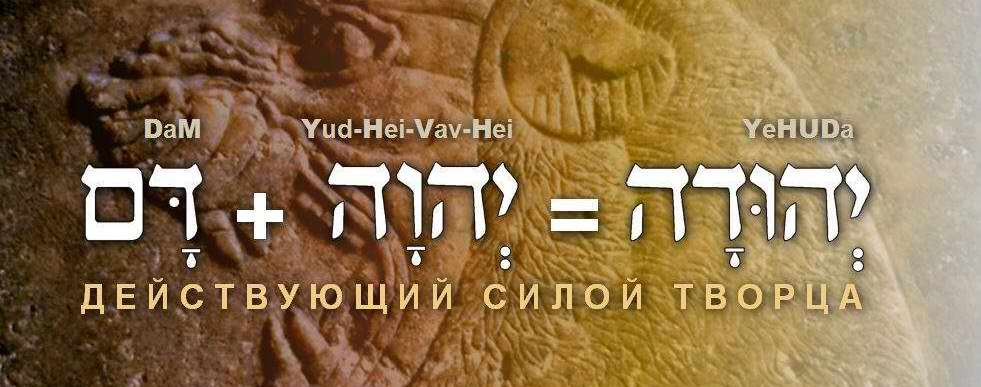
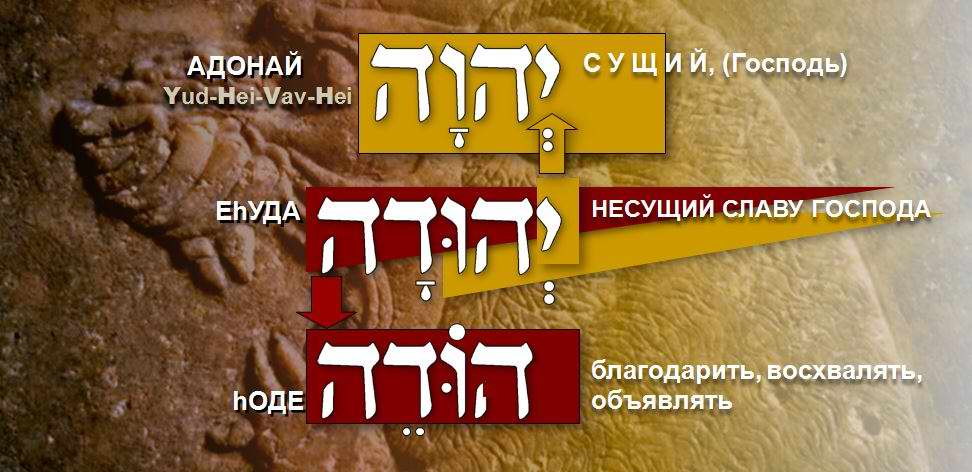
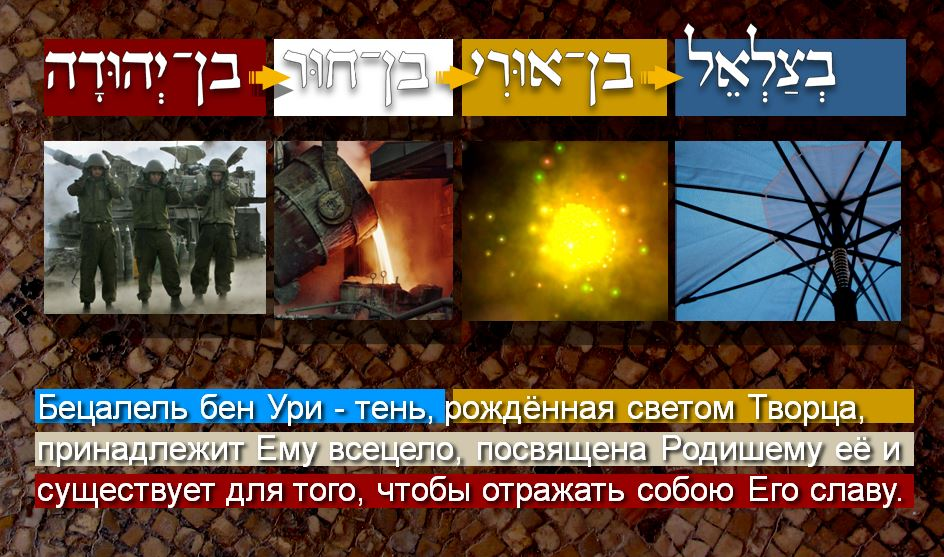

БЕЦАЛЕЛЬ / Веселеил /. Прославляющий Бога

Родословие Бецалеля, сына Ури, сына Хура из колена Еhуда, мы встречаем в Писании четыре раза. Вы спросите, много это или мало? - Это очень много, если учитывать, то что наиболее часто упоминаемый в ТАНАХе Давид имеет лишь два (+ одно неполное).

БЕЦАЛЕЛЬ. Славящий Бога
Йеhуда - имя уникальное. Есть немало имен в Библии, содержащих в себе частицу великого имени Всевышнего (Тетраграматон). Так имя отца Бецалеля содержит частицу, первую букву великого имени - УРИ. Но другого имени в Писании, которое содержало бы все это имя целиком - не припомню. В сущности Йеуда - это страшное имя Бога (Тетраграматон) + помещенная в него буква "далет" - первая буква слова ДАМ (кровь=человек). Человек, погруженный во славу Божью, объятый именем Всевышнего.
БЕЦАЛЕЛЬ. Призвание. (часть I) БЕЦАЛЕЛЬ. Под покровом Всевышнего. (часть II) БЕЦАЛЕЛЬ. Свет Господень (часть III) БЕЦАЛЕЛЬ. Дед ХУР (часть IV) БЕЦАЛЕЛЬ. Славящий Бога (часть V)
Студия "Тора-Арт"
ФИЛЬМ: Эфраима Калиша
МУЗЫКА: Даниэля Круглова
Как мы сказали, родословие нашего героя восходит к одному из славнейших колен Израилевых, его родоначальнику Еhуда.
Наиболее известное толкование имени Еhуда - прославляющий Господа. Его можно толковать иначе: действующий силой Творца. Еврейская традиция при токовании имен рассматривает не только возможные сочетания слов, или их частей, составляющих имя, но и сочетание букв, или даже отдельную букву - начало соответствующего слова. Разумеется, такой подход возможен лишь при исследовании оригинала (древнееврейские тексты).
***
יְהוּדָה Ehуда. Славящий Бога.
«Бецалель, сын Ури, сын Хура, из колена Еhуда».
Колено Еhуда (Иуда — в Синодальном переводе), в нем есть нечто особое, что выделяет его среди всего Израиля. Не случайно, именно ему обетовано поставлять царей в Израиле навечно. Дух Божий присвоил ему титул: «Иуда — скипетр Мой» (Пс. 59:9). Именно колено Еhуда выступало первым, когда Израиль вел Божьи войны. И на то были веские причины. Это верно, что оно было самым многочисленным и сильным из всех колен. Но не это было решающим. То, что действительно определяло его суть — имя, возвестившее его призвание. Еhуда, несущий всю мощь страшного и ужасного имени Господа, повергающего в трепет народы.
Имя Еhуда уникально. Нет другого подобного, в котором присутствовали бы все четыре буквы непроизносимого имени Всевышнего. Причем, все выделенные четыре буквы יְהוּדָה следуют в точно таком же порядке, что и в этом великом имени: יְהוּה (ЯХВЕ — великое имя Бога). Между буквами этого имени вклинивается буква далет דָ , начальная буква слова «да», что на иврите означает: кровь = человек דָם [дам]. Так что имя Еhуда можно интерпретировать следующим образом: человек, действующий силой Творца, то есть тот, кто несет на себе всю мощь имени Всевышнего.


Есть еще одна причина, почему из всех колен именно Еhуде была дарована великая сила и могущество, царственный скипетр и рожденный от него Мессия. Эта причина — хвала Господу. Хвала, заключенная в его имени, и определяющая его суть. Как написано: «... теперь-то я восхвалю Господа. Посему нарекла ему имя Еhуда» (Быт. 29:35).
В этом имени יְהוּדָה [Еhуда] мы видим уже знакомое нам четырехбуквенное имя Господа, представленное буквой יְ [Е] и глагол הוּדָה [hода] «благодарить». И, таким образом, можем прочитать его как «благодарящий (прославляющий) Господа». В этом секрет силы имени Ehуда. И это одно из важных качеств еврейского искусства — благодарение и восхваление Творца.

Имени Ehуда, как и каждому из колен Израиля, принадлежит свой собственный символ. Описание этих символов мы находим в благословении Иакова, записанном в книге Берейшит (Бытие). «Молодой лев Иуда, с добычи, сын мой, поднимается. Преклонился он, лег, как лев и как львица: кто поднимет его?» (Быт. 49:9). Лев — знак колена Ehуда, символ силы, воинственности, бесстрашия и царской власти. Слово царя веско и значимо, ему внимают все. Ehуда — человек, плоть и кровь, духом Предвечного исполненный силой и славой Творца.

Итак, еврейское искусство, по определению Творца, должно нести в себе генетику имени Ehуда и иметь в себе его свойство. Это искусство, которому внимают многие, подобно слову царя. Оно несет в себе всю мощь имени Господа и прославляет Его между народами. В этом состоит значение имени прапрадеда Бецалеля — Ehуда.
Отец тени есть свет. И полное имя Бецалеля — его родословие, можно прочитать так: Бецалель, сын Ури — тень, рожденная Светом Творца и принадлежащая Ему всецело; сын Хура, посвященный Тому, кто его родил; сын Ehуда, призванный отражать собой славу Создателя.

Знание истины о творчестве, его задачах и целях, как это задумал Создатель, делает нас действительно свободными в творчестве. Следуя священной заповеди об искусстве, художник может подняться в своем творчестве до неземного уровня, то есть, взойти на гору Господню. Подобно Моше взойти на гору и увидеть Небесный Храм. Лишь художник, любящий Творца и чтущий Его закон, может исполнить заповедь «сделай Мне». Только такой человек может претендовать на творчество пред Его лицом: наполниться духом, ведением и разумением от Бога.
«Сделай Мне» - значит сделай по закону, который Я определил. Очистись, освятись для Меня, преклонись под Мой покров и воздай Мне всю славу и честь, и тогда Я наполню тебя, маленького и слабого человека, вдохновением и силой Моего духа, мудростью, ведением, разумением во всяком искусстве. Ими Я творил небеса и землю, и всё, что в них, ими же ты сотворишь то, что Я повелю тебе.
В этом суть имени Бецалеля, сына Ури, сына Света. В этом генетика израильского творчества, каким определил его Бог Израилев, и таким оно непременно станет. Амен.
ЕСЛИ ЭТОТ МАТЕРИАЛ БЫЛ ВАМ ПОЛЕЗЕН, ПОЖАЛУЙСТА, ПОДЕЛИТЕСЬ ИМ С ДРУЗЬЯМИ
БЕЦАЛЕЛЬ - СЫН СВЕТА. Призвание. (часть I) БЕЦАЛЕЛЬ - СЫН СВЕТА. Под покровом Всевышнего. (часть II) БЕЦАЛЕЛЬ - СЫН СВЕТА. Свет Господень (часть III) БЕЦАЛЕЛЬ - СЫН СВЕТА. Дед ХУР (часть IV) БЕЦАЛЕЛЬ - СЫН СВЕТА. Славящий Бога (часть V)
Эта статья исправлена и дополнена автором.
(впервые Эфраима Калиша была опубликована на сайте skiniyadavidova.org)
автор: Эфраим Калиш /TORAART/